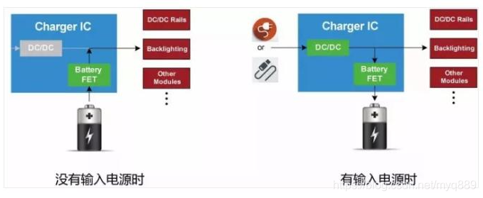
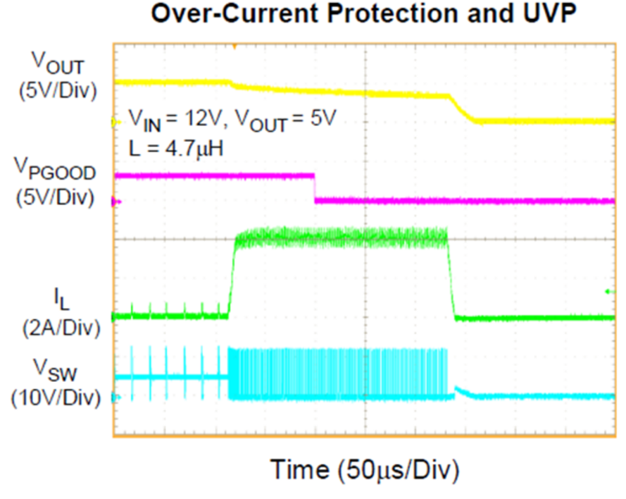

概述
记录一下充电IC一些硬件特性。
参考
特性说明
电源路径管理（Power Path）
使用非电源路径架构时，系统输入和电池电极连接到相同的充电器输出节点(如下图所示)，这种架构有很多局限，如果电池深度放电或者有缺陷，那么即使连接外部电源，也可能无法启动系统，即无法优先给负载供电。在系统启动之前，电池需要充电到一定的电压水平。另一个问题是充电器只能检测到流入电池和系统的总电流，因此充电器很难判断出电池是否充满。
选择带有电源路径管理架构功能（下图所示）的芯片就能解决上述出现的问题，在选择此架构情况下，当输入电源没有接入时，电池只接给负载供电，当有输入电源时，系统母线电压由充电芯片内部的DC/DC调节，同时给电池充电，并且系统负载具有更高的供电优先级，充电芯片会根据输入电源的能力和系统负载需求优先给系统供电，剩余的功率给电池供电。当负载需求超过输入电源的能力时，这就得了解充电芯片的另外一个功能DPPM。

动态电源路径管理（DPPM）
这个功能用来监控系统母线的输出电压，当总的负载需求超过输入电源的所能提供的最大功率时，系统母线的电压会下跌，当输出下降到一个预设值时，充电芯片会减小充电电流，将一部分充电电流分配给此时的负载使用，从而稳定母线电压不再下跌。如果在充电电流减小到零之后，输入电源仍然不能满足系统负载需求，那么系统母线电压将会继续下降直到低于电池电压，此时电池将会给系统负载供电，用以补偿输入电源不足部分。
输入电压动态电源管理（VINDPPM）
在某些情况下，输入电源的功率不足（过载）以满足设备的需求时，会导致输入电压拉低到欠压锁定阈值（UVLO）以下，此时充电芯片会关闭并停止充电，随后输入电源因为充电关闭而恢复，其电压重新回到设定值，此时又会重新使能充电芯片，并开始充电。但输入电压会再次因为过载而拉低，这种不良情况被称为“打嗝模式”（如下图所示）
当输出端发生短路的时候，过流、欠压的状况都在同时发生，而且也没有比这更糟的状况了，所以这时候的打嗝模式就是必然会启动的，下图所示的波形就是在这种情况下能够看到的，输出电压一直处于低位，电感电流在尝试启动期间一直处于发生过流保护的高位，但对输出端的电压则影响极小，完全不能将电压提升到应有的水平。

VIN_DPPM功能就可以解决这一问题，因为他可以连续监测充电器的输入电压，如果输入电压低于设定阈值，充电芯片会减小充电电流，从而防止输入电压被拉低。
输入电流限制（IINDPM）
限制输入电流。
电池补充模式
DPPM模式下，如果充电电流降至零，并且系统负载电流增加超过设置的输入电流限制，输出电压进一步降低。当输出电压低于阈值，电池补充系统负载。当输出电压高于阈值时，电池停止补充系统负载。
在电池补充模式下，电池给负载的供电电流是不受调节（BAT-FET是完全打开），但是会有短路保护。当VOUT电压比电池电压低时，等待后，如果过载仍然存在，输出会被关闭，被称为输出短路保护阈值。此时短路恢复计数器开始计数，在时间后，VOUT被打开尝试重启，如果短路仍然存在，VOUT再次被关闭，计数器继续开启计数。
运输模式（Shipping Mode）
运输模式通常是设备的最低静态电流状态，为了最大限度的延长贮藏寿命，制造商在铲平出厂前就已经启用了这种状态，使得消费者在获得产品时电池电量不会耗尽，运输模式实质上是断开了电池的连接，减小电池电量流失，当消费者第一次打开产品接上usb充电时，会激活电池。
输入电流优化ICO
ICO是TI特有的输入电流优化算法，此算法可自动检测输入功率的最大电容以优化电源，同时保持系统和充电电流的一致性，以确保利用最大输入功率。
输入过压保护(Input OVP)
如果充电芯片的输入电压超过规定的电压，则会触发保护，此时会立即失能充电芯片。